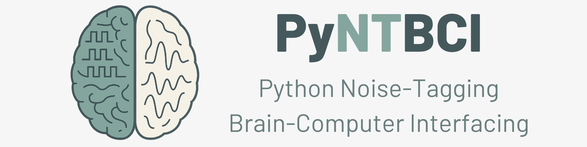

PyntBCI
The Python Noise-Tagging Brain-Computer Interfacing (PyntBCI) library is a specialized Python toolbox developed for the noise-tagging brain-computer interfacing (BCI) project at the Donders Institute for Brain, Cognition, and Behaviour at Radboud University in Nijmegen, the Netherlands. PyntBCI offers a suite of signal processing tools and machine learning algorithms tailored for BCIs using evoked responses, such as those recorded by electroencephalography (EEG). It is particularly focused on supporting code-modulated responses like the code-modulated visual evoked potential (c-VEP).
Installation
To install PyntBCI, use:
pip install pyntbci
Getting started
Various tutorials and example analysis pipelines are provided in the tutorials/ (under Getting Started) and examples/ (under Examples) folder. Most operate on synthetic EEG data generated on the fly (see pyntbci.eeg); one example instead uses real EEG data obtained through MOABB.
Referencing
When using PyntBCI, please reference the following two articles:
Thielen, J., van den Broek, P., Farquhar, J., & Desain, P. (2015). Broad-Band visually evoked potentials: re(con)volution in brain-computer interfacing. PLOS ONE. doi: 10.1371/journal.pone.0133797
Thielen, J., Marsman, P., Farquhar, J., & Desain, P. (2021). From full calibration to zero training for a code-modulated visual evoked potentials for brain–computer interface. JNE. doi: 10.1088/1741-2552/abecef
For a constructive review of the c-VEP BCI field, see:
Martínez-Cagigal, V., Thielen, J., Santamaría-Vázquez, E., Pérez-Velasco, S., Desain, P., & Hornero, R. (2021). Brain–computer interfaces based on code-modulated visual evoked potentials (c-VEP): a literature review. Journal of Neural Engineering. doi: 10.1088/1741-2552/ac38cf
Contact
Jordy Thielen (jordy.thielen@donders.ru.nl)